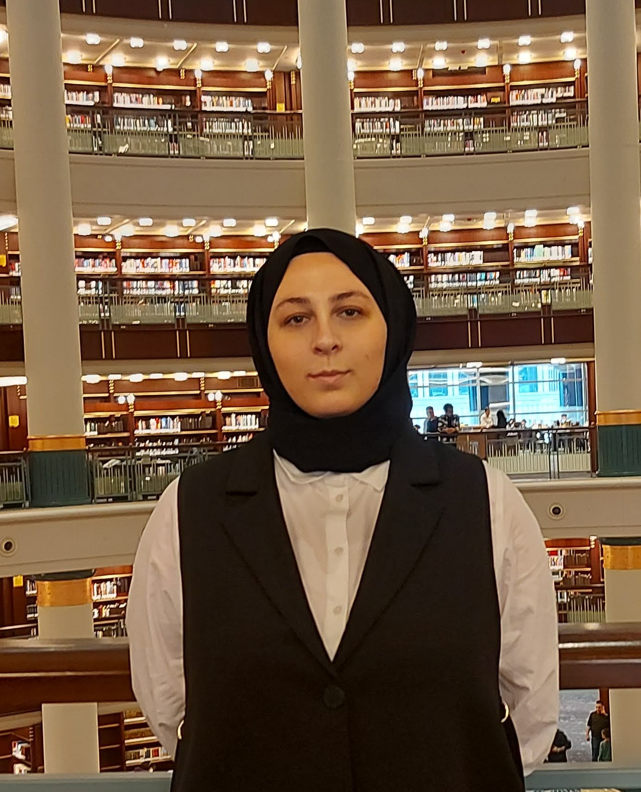

Summary
My name is Munise Reyhan AÇIKGÖZ. I was born in August 1996, and I have been living in Istanbul since birth.
I graduated from Marmara University. While studying at the university, I started working in different jobs.
Meanwhile, I tried to improve my skills, travel, and participate in some social responsibility projects.
Since then, I have been striving to keep going.
Education
- Zeytinburnu A.İ.H.L 2011-2014
- Marmara Univercity 2014-2022
Work Experience
- 2014-2015: ILICA MARKETING&SALES
- 2015-2016: UTKU MARKETING
- 2016-2019: MARMARA UNIVERCITY REGISTAR'S OFFICE
- 2019-2022: MARKET(BIM)
- 2022-Present: MEBTUR TRAVEL AGENCY
Skills
- Html
- EViews
- WordPress
- Office Programs
- Photoshop-Basic Level-
Award and Certifications
- Financial Literacy Certificate
- Speed Reading and Comprehension
- First Aider(card)
Other